先週、今週、週末の梅吉 [梅吉]
気持ちよ〜く晴れた先週の週末。

いつもはお布団でぐだぐだしていると叩き出すのですが
（下僕なんですがこのあたりは強気なんですよw)
ちょっと仏心を出して放っておいたならば・・・

すっかりダメになった様子(^_^;)
うっかりケットをかけてあげたらこんな気持ちよさそうな事にw
これは朝６時ごろ。
ベッドメイクは諦めて好きなだけ寝るがいいわ、と思っていたら本当に起きてきません。
時々生存確認をしたりしてw
結局起きてきたのは夕方の４時くらい。その間飲まず食わず出さず。
お天気の悪い日や暑すぎる日はあまり活動せず寝ていることが多いですが
お天気が良くても寝てるんだな、と思った出来事でした。
「ごはんだよ」って起こさなければもっと寝ていたかも。
（起きた後はわーわー言ってご飯を要求し、もりもり食べて元気一杯走り回って
大変立派なものをお出しになりましたw）
人間も10代、20代前半の頃は12時間くらい寝てたという友人もいましたので
「寝子」の「ねこ」はほっといたらもっと寝るんでしょうねw
変わって今週末の梅吉。

雨上がりだったせいでしょうか。梅雨時期でもないのにお鼻がにじにじw
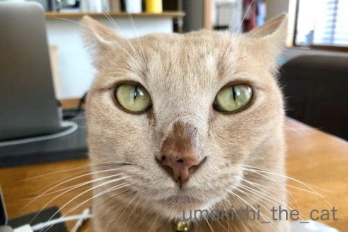
にじにじ過ぎますってばwww
このお鼻になるとなにをしてもおマヌケな感じになって笑えます ( ´艸｀)
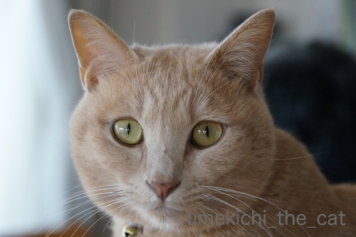
比較のためににじにじしてない梅吉を。
全然違う。。。
トイレ掃除は、よーいドン！ [梅吉]
梅吉さんがいそいそと奥の部屋に消えていきます。

やがて

何事か起きた様子。
奥の部屋にちらりと見えている腕はおっとです。
一体なにが起きているかと言うと・・・・
梅吉はおっとが梅吉のトイレ掃除をすると大喜びの大興奮！
ガサガサ猫砂を掘り返し始めると走ってトイレの部屋に行き掃除の様子を監視。
興奮が極まると掃除しているおっとの背中や腕をガブっとするんです (⌒_⌒;
私が掃除したってしらんぷり、全くの平常心なのに。
そしてトイレ掃除が終わると・・・・・
（24秒です。おっとのばたばた走る音がします）
男子廊下５メートル走 家庭内決勝！
時々梅吉が我に返ってアホらし、と言う顔をしますが楽しそうなふたりですwww

完走のご褒美は足タックル。
疲れた体はお膝でまったり。

うっとり♡
梅吉を膝から降ろそうとすると激しい抵抗にあってまたガブ！
このふたり仲が良いんだかなんなんだか良く分かりませんwwwww
魔女か悪魔か ハロウィンの憂鬱（？） [梅吉]


かくれんぼいろいろ [梅吉]
リビングの入り口でよく目にする光景。

こちらの様子をうかがってます。

さらに近づくと身を低くして隠れてみる。
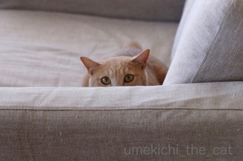
下僕も身を低くして息を殺していると心配になるのか覗いてきます(*>艸<)

![[猫]](https://blog.ss-blog.jp/_images_e/101.gif) あ〜 わし みつかってしもた〜
あ〜 わし みつかってしもた〜
見つけて欲しいくせにwww

ソファーのマルチカバーの下、不自然な膨らみが！！
かくれんぼですかー0(≧▽≦)0

ちらりとめくると

めっちゃ迷惑そうでした(-_-メ)

のぞかんといてや
はいはい、ごめんなさいね。
喜ぶときもあるのに・・・
最後はクイズです！
梅吉はどこ？一緒に探してください！！
（15秒です＾＾）
わかりましたか？ ( ´艸｀)
 ↑ガブッと一押し↑
↑ガブッと一押し↑

こちらの様子をうかがってます。

さらに近づくと身を低くして隠れてみる。
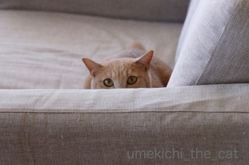
下僕も身を低くして息を殺していると心配になるのか覗いてきます(*>艸<)

見つけて欲しいくせにwww

ソファーのマルチカバーの下、不自然な膨らみが！！
かくれんぼですかー0(≧▽≦)0

ちらりとめくると

めっちゃ迷惑そうでした(-_-メ)

はいはい、ごめんなさいね。
喜ぶときもあるのに・・・
最後はクイズです！
梅吉はどこ？一緒に探してください！！
（15秒です＾＾）
わかりましたか？ ( ´艸｀)
今年最後の病院とワクチン接種 [梅吉]
週末は梅吉の受診日でした。
ちょっと解説しますと梅吉は「高脂血症」で毎日薬を服用しております。
体重や年齢から見て生活習慣によるものではなく
脂肪をうまく代謝できない体質のようです。
経緯など興味のある方はタグの「病院」で関連記事が出てきます。
よろしければご覧ください＾＾

病院の待合室にて。キャリーの隅でちんまりしてます。
ちんまりしているだけで怖がったりしている様子はありません。
待合室を大きな犬が横切っても余裕です。度胸はあるんですよねw

診察台に乗せられると「わし かえるー！」とキャリーに戻ろうとしますよ（^_^;)
ちなみにこの日の体重は4850g。
ちょっと増加気味ですが朝のトイレ大小をしていないせいもあるかな。
それに夏場の体重増加は梅吉の先生によると自然なことなんだとか。
（結果オーライの性格なので「なぜ？」かは聞いたけど忘れちゃいましたw）
私自身が己の体重を考えてちょっとホッとしたかもwww
PCの前で同じくホッとしているあなた！仲間！仲間ー！！(*>艸<)

今日はちっくんを二回しなきゃいけないからがんばろうね！
なでなで・・・・・
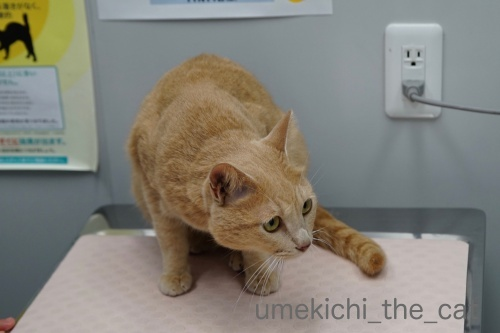
先生が診察室に入ってくると後ずさる。

顔の向きが反対向いちゃったので写真は取れなかったのですが
この日は先生に「シャーーーーーッ！」
マイルドになるのも良いけどそのくらい勢いがあった方が梅吉らしくて良いと思いますよ＾＾

触診の結果も良好で採血に向かう梅吉。
「うーわー」鳴いて怒ってますが暴れたり噛みついたりはしないんです。
やっぱり肝が座っているのかな。

採血後戻ってくるとさっさとキャリーに入ります (⌒_⌒;
血液検査の結果、中性脂肪の値がもう少し数値が下がっていて欲しいところでしたが
上がってはいないのでまずまず良好。
体重増加の件も中性脂肪値が上がっていないということは
脂肪ではなく筋肉が増えているということなので良い傾向とのことでした。
（私はちょっと耳が痛いかもw）
この後ワクチンをちっくんして今年の診察は終了しました。
次回の診察予約をしたのですが、来年一月。
もう来年の話が出るようになってきましたねー。一年が早いです。
ワクチンをしたこともありこの日はどこへも行かずに梅吉の様子を観察。
ワクチン接種後だるそうにしていたのは初めてワクチンの時のみ。
去年は普段とまったく変わりなく過ごしたのですが今年は・・・・・
（16秒です）
おとーさんのなぞの呼びかけに大リアクションです！（今回はおっとの声が入ってませんが）
なんだろう、このハイテンションは・・・
昼寝もあまりせずうろうろしたり落ち着きなくいつもよりも甘えっ子でした。
夜にはすっかり落ち着いて何も問題はなかったのでご安心くださいね＾＾
西国三十三箇所、結願しました [旅行記]
〜前記事の続きです〜

翌朝はすっきりと快晴！！
昨日は雨に煙っていた金華山と岐阜城もくっきり見えます＾＾

宿の目の前の長良川の流れも美しく![[ぴかぴか（新しい）]](https://blog.ss-blog.jp/_images_e/150.gif) 水の色が独特な色をしています。
水の色が独特な色をしています。
この日は車を借りて旅の目的地、谷汲山華厳寺に向かいました。
華厳寺は西国三十三箇所の33番目の札所。結願の地です。
結願の地を最後にとっておいたというわけではなく
行きにくいところなのでこうなりました。
霊場の中の唯一つの岐阜県のお寺。（他は畿内2府3県内です）
良いお天気だったのでドライブ日和でもありましたよ＾＾
途中道の駅に寄って柿を買ったりソフトクリームを食べたり。
華厳寺へ向かう途中の本巣のあたりは柿畑がたくさん。富有柿が収穫間近の様でした。

岐阜市内中心部から寄り道しながらでも１時間くらいで華厳寺に到着。
車を止めてお土産屋さんが並んだ参道を1キロ弱歩きますよ。
これまで訪れた三十二箇所の霊場に想いを馳せながら・・・・
と行きたいところでしたが暑くて暑くて感慨に浸っている余裕はありませんでしたw
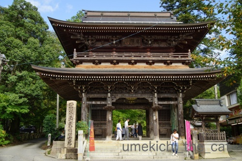
仁王門に到着。
巨木がたくさんありました。
昨日訪れた木知原（やながあったところ）あたりは先日の台風21号の被害か
折れた木がたくさんあったのですがここはあまり被害は見当たらず。
なによりでした＾＾
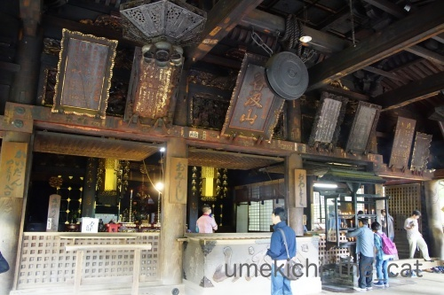
本堂にお参りして御朱印をいただきました。

華厳寺でいただく御朱印は３種。
向かって左上から
「大悲殿」（本堂のこと。観音様のいらっしゃるところという意味です）
右下
「笈摺堂」（笈摺：おいずる＝巡礼時に着る袖なしの羽織りみたいな衣装、を納めるところ）
左下
「満願堂」（三十三箇所満願の報告をするところ）
となります。
私たちは笈摺は着てませんよw
四国巡礼では定番のようですが西国三十三箇所では着ている方は時々見かける程度で
みなさん持ち歩いているようです。

笈摺堂

満願堂
無事に回り終えたご報告をして三十三箇所の巡礼が終わりました。
平成25年から回り始めて５年。いろいろなところへ行きました。
印象に残っているところもあればそうでないところも(^_^;)
このお話はまた後日しますね。
結願して身も心も清々しくなったのでお腹が空きました。
岐阜市内へ戻って車を返してごはん！ビール！！
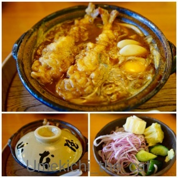
ランチは名古屋が本店の味噌煮込みうどんの店山本屋本店。
味噌煮込みうどん本格的なものは食べたことがなかったので一度食べてみたかった！
サラダみたいなお漬物がおかわり自由なのも嬉しいです。
これをアテにビールを飲みながらうどんを待ちました＾＾
コクのあるお味噌の味、美味しかったです。

もう一箇所立ち寄ったのがエールエール ギフというクラフトビールのお店。
名古屋にあるワイマーケットブルーイングの直営店です。
私が頼んだのは「金シャチビール プラチナエール」
軽い喉ごしで暑い日にぴったりのごくごく飲める系のビールでした。
おっとが頼んだのは「ワイマーケット ムーンライトイエロースカイ」
「ワイマーケットニュートラルIPA」
どちらだったか曖昧なんですが「ムーンライト〜」は山椒が効いたビールで美味しかったです。
意外な組み合わせのようですが黒いビールに山椒が合うんですよ！
このお店はなぜが餃子が無料でいただけました＾＾（週末限定みたいです）

帰りの電車の乗る前に金神社にお参り。
信長公の金ピカ像に始まって金ピカの鳥居に見送られた岐阜の旅でした。
追記
駅弁を買って帰ってお夕飯にしよう！
それなら名古屋っぽい駅弁があるかもしれない名鉄岐阜駅で見てみよう！と行ってみたのですが・・・
駅弁売り場見当たらず。
JR岐阜駅は夕方だったので駅弁売り場は店じまい。
ちょっと心残りの駅弁でした。残念。
↑ガブッと一押し↑
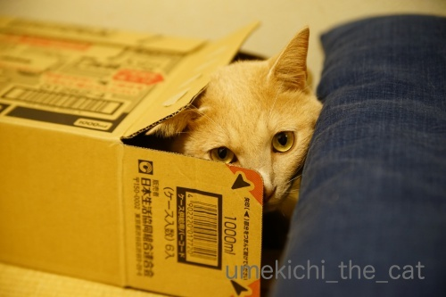
私たちが帰宅して梅吉は大喜びで走り回っていましたよ。
遊んで欲しくて仕方がないw

遊び疲れた後はおかーさんとまったりお風呂タイムでした＾＾

翌朝はすっきりと快晴！！
昨日は雨に煙っていた金華山と岐阜城もくっきり見えます＾＾

宿の目の前の長良川の流れも美しく
この日は車を借りて旅の目的地、谷汲山華厳寺に向かいました。
華厳寺は西国三十三箇所の33番目の札所。結願の地です。
結願の地を最後にとっておいたというわけではなく
行きにくいところなのでこうなりました。
霊場の中の唯一つの岐阜県のお寺。（他は畿内2府3県内です）
良いお天気だったのでドライブ日和でもありましたよ＾＾
途中道の駅に寄って柿を買ったりソフトクリームを食べたり。
華厳寺へ向かう途中の本巣のあたりは柿畑がたくさん。富有柿が収穫間近の様でした。

岐阜市内中心部から寄り道しながらでも１時間くらいで華厳寺に到着。
車を止めてお土産屋さんが並んだ参道を1キロ弱歩きますよ。
これまで訪れた三十二箇所の霊場に想いを馳せながら・・・・
と行きたいところでしたが暑くて暑くて感慨に浸っている余裕はありませんでしたw
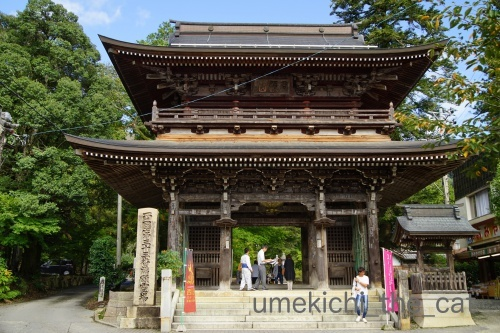
仁王門に到着。
巨木がたくさんありました。
昨日訪れた木知原（やながあったところ）あたりは先日の台風21号の被害か
折れた木がたくさんあったのですがここはあまり被害は見当たらず。
なによりでした＾＾
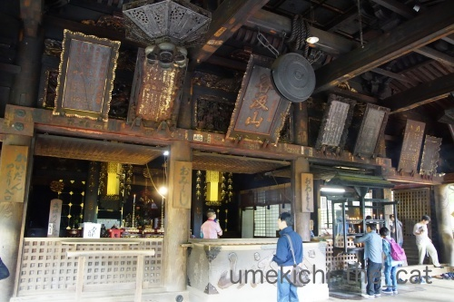
本堂にお参りして御朱印をいただきました。

華厳寺でいただく御朱印は３種。
向かって左上から
「大悲殿」（本堂のこと。観音様のいらっしゃるところという意味です）
右下
「笈摺堂」（笈摺：おいずる＝巡礼時に着る袖なしの羽織りみたいな衣装、を納めるところ）
左下
「満願堂」（三十三箇所満願の報告をするところ）
となります。
私たちは笈摺は着てませんよw
四国巡礼では定番のようですが西国三十三箇所では着ている方は時々見かける程度で
みなさん持ち歩いているようです。

笈摺堂

満願堂
無事に回り終えたご報告をして三十三箇所の巡礼が終わりました。
平成25年から回り始めて５年。いろいろなところへ行きました。
印象に残っているところもあればそうでないところも(^_^;)
このお話はまた後日しますね。
結願して身も心も清々しくなったのでお腹が空きました。
岐阜市内へ戻って車を返してごはん！ビール！！
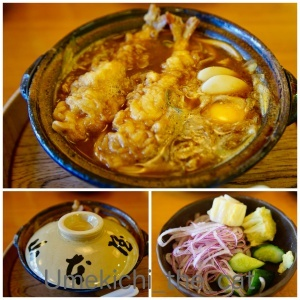
ランチは名古屋が本店の味噌煮込みうどんの店山本屋本店。
味噌煮込みうどん本格的なものは食べたことがなかったので一度食べてみたかった！
サラダみたいなお漬物がおかわり自由なのも嬉しいです。
これをアテにビールを飲みながらうどんを待ちました＾＾
コクのあるお味噌の味、美味しかったです。

もう一箇所立ち寄ったのがエールエール ギフというクラフトビールのお店。
名古屋にあるワイマーケットブルーイングの直営店です。
私が頼んだのは「金シャチビール プラチナエール」
軽い喉ごしで暑い日にぴったりのごくごく飲める系のビールでした。
おっとが頼んだのは「ワイマーケット ムーンライトイエロースカイ」
「ワイマーケットニュートラルIPA」
意外な組み合わせのようですが黒いビールに山椒が合うんですよ！
このお店はなぜが餃子が無料でいただけました＾＾（週末限定みたいです）

帰りの電車の乗る前に金神社にお参り。
信長公の金ピカ像に始まって金ピカの鳥居に見送られた岐阜の旅でした。
追記
駅弁を買って帰ってお夕飯にしよう！
それなら名古屋っぽい駅弁があるかもしれない名鉄岐阜駅で見てみよう！と行ってみたのですが・・・
駅弁売り場見当たらず。
JR岐阜駅は夕方だったので駅弁売り場は店じまい。
ちょっと心残りの駅弁でした。残念。
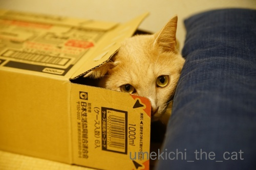
私たちが帰宅して梅吉は大喜びで走り回っていましたよ。
遊んで欲しくて仕方がないw

遊び疲れた後はおかーさんとまったりお風呂タイムでした＾＾
やなと谷汲山華厳寺、満願の旅 [旅行記]
連休を利用して岐阜に行って来ました。宿泊したのは岐阜市。
岐阜県だと飛騨、高山、白川郷、郡上八幡が観光地として人気だと思いますが
今回の目的は華厳寺に行くことだったので岐阜市が拠点。
華厳寺に行くことがなければ岐阜市内に泊まることはなかったと思いますが（岐阜市の方ごめんなさい）
岐阜市、街は清潔、長良川もとても綺麗に管理されていて街ゆく人もおっとりのんびり。
適度に都会で見渡せば山々に囲まれて・・・
とっても住みやすそうな良い街でした！！こういう街、好きなんです＾＾
水道水もそのまま美味しく飲めそう。
さて、新幹線で新大阪から米原まで。そこから東海道本線に乗り換えます。
途中関ヶ原駅にも止まります。
教科書に出てくるような場所、ちょっとテンション上がりませんか？
新幹線で通り過ぎたことはあっても駅に止まったことある方はあまりいらっしゃらないのでは。
（鉄道ファン戦国武将ファン除くw）
駅にはこんな立て看板が。
関ヶ原の合戦時の東西の主な武将の名前です。
戦国武将には疎い私でもだいたい（笑）わかる。
車窓から古戦場跡の看板も見えましたよ。
大垣という駅で今度は超ローカル線の樽見鉄道に乗り換えます。
発車の定刻を２〜３分すぎても切符を買っている人がいると待っていてくれる優しいローカル線。
良いですね、良いですね＾＾

運賃とお食事がセットになった券を買いましたよー。

向かったのは「やな」と呼ばれる河原にある小屋で鮎料理を食べさせてくれるところ。
海の家の河バージョンと思ってください。
木知原（こちぼらと読みます）周辺にはやなが点在しています。
このやなは最寄り駅までの往復を送迎してくれました。

単品料理も色々ありますがこの日はコース料理。
どんどん出て来ますよ。
鮎づくし。
ざっと紹介すると、赤煮（甘露煮のことです）お刺身、塩焼き、鮎田楽、フライ、鮎雑炊。
食べきれないと思ったので赤煮、鮎田楽はお持ち帰りしました。
王道はやっぱり塩焼き。炭火焼なので皮はぱりぱり身はふっくら。
一人２尾は多いんじゃない？と思いましたがぺろり。本当に美味しかったです！
お刺身は味というよりコリコリとした食感と滅多に食べられない希少価値を味わうものかな？
鮎雑炊は初めて食べましたが、鮎飯よりも鮎の出汁がよく出ていて絶品でした。
アルミの鍋でどーんと出てくるのが良いでしょw
岐阜市内でも鮎雑炊のお店はあちこちで見かけましたが
鮎飯を売りにしているお店は見かけませんでした。
産地では鮎雑炊が美味しいとされているのでしょうか。

根尾川と周りの山々を見渡しながらのお食事です。
天気悪く見えますか？そうです！台風の影響で雨が降って風が強かったのです。
悔しくなんかないもんw
山の所々に霧が立ってなかなかの眺めでした。ほんとだってばw
満腹になって再びローカル線で移動。
JR岐阜駅前では金ピカの信長公が出迎えてくれました。
時々雨が強く降って来ますが負けずに観光。
古ーい街並みが残っているあたりを散策します。
仕事が美しいです。
杉（かな？）をふんだんに使った建物、美濃和紙を使った工芸品を扱っているお店が多かったです。
岐阜市内を流れる長良川にはたくさんの鵜飼観光船が泊まっていました・・・
私たちもこういう船に乗って鵜飼を見物する予定だったのですが悪天候のため中止に(꒦ິ⌑꒦ີ)

埋め合わせに鵜飼ミュージアムに行って来ました。
長良川の鵜匠「宮内庁式部職鵜匠」というれっきとした国家公務員であることご存知でしたか？
現在宮内庁職員の鵜匠は岐阜市長良川の鵜匠６名、
岐阜関市小瀬（同じく長良川）の鵜匠３名計９名なんですって。
鵜匠は世襲制。
古くは戦国武将や将軍家の庇護を受けたりして伝統を守って来た鵜飼。
江戸期には庶民も鵜飼見物を楽しんだりしていたようです。見物した芭蕉の句も紹介されていましたよ。
明治期になって宮内省に組み入れられて安定した地位を得たようです。
実は私は鵜飼にあまり興味がなかったのですがミュージアムで色々見て
これは絶対に見なければ、と思いました。
赤松の篝火のなか船縁をコンコンと叩きながらの漁。
幻想的で美しい光景ではありませんか！
いつかリベンジしたいなぁ・・・

宿の窓から雨に煙る金華山と岐阜城を見上げましたよ。
夕食は本当は鵜飼見物の船に乗りながらホテルが用意したお弁当の予定だったのですが
ホテル内でのお食事に変更。
ここでも鮎がたくさん出て来て正直まいりましたwww
来シーズンまでもう鮎は食べなくて良いです。
シッターさんからのメールを待って梅吉の元気な様子を確認して安心して眠りにつきました。
↑ガブッと一押し↑
お留守番のご褒美におとーさんにたくさん遊んでもらった梅吉さん。
かくれんぼ中です＾＾
岐阜県だと飛騨、高山、白川郷、郡上八幡が観光地として人気だと思いますが
今回の目的は華厳寺に行くことだったので岐阜市が拠点。
華厳寺に行くことがなければ岐阜市内に泊まることはなかったと思いますが（岐阜市の方ごめんなさい）
岐阜市、街は清潔、長良川もとても綺麗に管理されていて街ゆく人もおっとりのんびり。
適度に都会で見渡せば山々に囲まれて・・・
とっても住みやすそうな良い街でした！！こういう街、好きなんです＾＾
水道水もそのまま美味しく飲めそう。
さて、新幹線で新大阪から米原まで。そこから東海道本線に乗り換えます。
途中関ヶ原駅にも止まります。
教科書に出てくるような場所、ちょっとテンション上がりませんか？
新幹線で通り過ぎたことはあっても駅に止まったことある方はあまりいらっしゃらないのでは。
（鉄道ファン戦国武将ファン除くw）
駅にはこんな立て看板が。
関ヶ原の合戦時の東西の主な武将の名前です。
戦国武将には疎い私でもだいたい（笑）わかる。
車窓から古戦場跡の看板も見えましたよ。
大垣という駅で今度は超ローカル線の樽見鉄道に乗り換えます。
発車の定刻を２〜３分すぎても切符を買っている人がいると待っていてくれる優しいローカル線。
良いですね、良いですね＾＾

運賃とお食事がセットになった券を買いましたよー。

向かったのは「やな」と呼ばれる河原にある小屋で鮎料理を食べさせてくれるところ。
海の家の河バージョンと思ってください。
木知原（こちぼらと読みます）周辺にはやなが点在しています。
このやなは最寄り駅までの往復を送迎してくれました。

単品料理も色々ありますがこの日はコース料理。
どんどん出て来ますよ。
鮎づくし。
ざっと紹介すると、赤煮（甘露煮のことです）お刺身、塩焼き、鮎田楽、フライ、鮎雑炊。
食べきれないと思ったので赤煮、鮎田楽はお持ち帰りしました。
王道はやっぱり塩焼き。炭火焼なので皮はぱりぱり身はふっくら。
一人２尾は多いんじゃない？と思いましたがぺろり。本当に美味しかったです！
お刺身は味というよりコリコリとした食感と滅多に食べられない希少価値を味わうものかな？
鮎雑炊は初めて食べましたが、鮎飯よりも鮎の出汁がよく出ていて絶品でした。
アルミの鍋でどーんと出てくるのが良いでしょw
岐阜市内でも鮎雑炊のお店はあちこちで見かけましたが
鮎飯を売りにしているお店は見かけませんでした。
産地では鮎雑炊が美味しいとされているのでしょうか。

根尾川と周りの山々を見渡しながらのお食事です。
天気悪く見えますか？そうです！台風の影響で雨が降って風が強かったのです。
悔しくなんかないもんw
山の所々に霧が立ってなかなかの眺めでした。ほんとだってばw
満腹になって再びローカル線で移動。
JR岐阜駅前では金ピカの信長公が出迎えてくれました。
時々雨が強く降って来ますが負けずに観光。
古ーい街並みが残っているあたりを散策します。
仕事が美しいです。
杉（かな？）をふんだんに使った建物、美濃和紙を使った工芸品を扱っているお店が多かったです。
岐阜市内を流れる長良川にはたくさんの鵜飼観光船が泊まっていました・・・
私たちもこういう船に乗って鵜飼を見物する予定だったのですが悪天候のため中止に(꒦ິ⌑꒦ີ)

埋め合わせに鵜飼ミュージアムに行って来ました。
長良川の鵜匠「宮内庁式部職鵜匠」というれっきとした国家公務員であることご存知でしたか？
現在宮内庁職員の鵜匠は岐阜市長良川の鵜匠６名、
岐阜関市小瀬（同じく長良川）の鵜匠３名計９名なんですって。
鵜匠は世襲制。
古くは戦国武将や将軍家の庇護を受けたりして伝統を守って来た鵜飼。
江戸期には庶民も鵜飼見物を楽しんだりしていたようです。見物した芭蕉の句も紹介されていましたよ。
明治期になって宮内省に組み入れられて安定した地位を得たようです。
実は私は鵜飼にあまり興味がなかったのですがミュージアムで色々見て
これは絶対に見なければ、と思いました。
赤松の篝火のなか船縁をコンコンと叩きながらの漁。
幻想的で美しい光景ではありませんか！
いつかリベンジしたいなぁ・・・

宿の窓から雨に煙る金華山と岐阜城を見上げましたよ。
夕食は本当は鵜飼見物の船に乗りながらホテルが用意したお弁当の予定だったのですが
ホテル内でのお食事に変更。
ここでも鮎がたくさん出て来て正直まいりましたwww
来シーズンまでもう鮎は食べなくて良いです。
シッターさんからのメールを待って梅吉の元気な様子を確認して安心して眠りにつきました。
お留守番のご褒美におとーさんにたくさん遊んでもらった梅吉さん。
かくれんぼ中です＾＾
お留守番頑張りました [梅吉]
やっぱり足にがぶがぶ・・・

梅吉さんにはお留守番をお願いして岐阜に行って来ました。
いつもとは違うスタッフの方がシッターに来てくれましたが
やっぱり足がぶがぶはお約束のようです(⌒_⌒;

ベランダに出たシッターさんを追いかけるのを見ると嫌がってはいない様子。
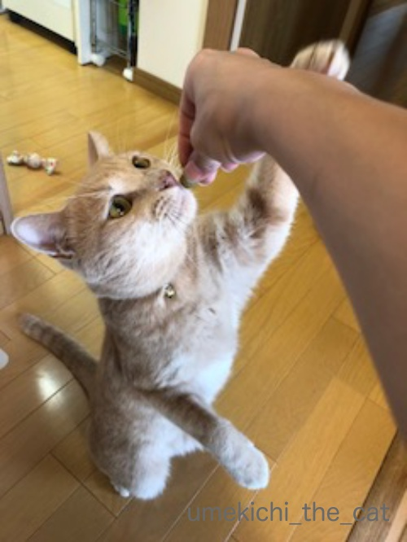
手からおやつをもらっているしw
明日は旅行記をアップしますね。
興味がありましたら読んでくださいませm(_ _)m
前記事のお返事はこれから書かせてくださいねー。
みなさまの所へもこれから遊びに伺いますのでよろしくお願いします！
タグ：お留守番
追い詰められてぐねんぐねんと謎の呼びかけ [梅吉]
イニャバウワーの後おやつを待ちきれなくてぐねんぐねんと床でのたうつ梅吉さん。

モタモタしているとがぶがぶしてくるので要注意です。
ストッキング履いているともっと大変。
この うすいかわは なんやー
とストッキングを引っ張ろうとします(⌒_⌒;

こちらは遊んで欲しくて一人で盛り上がっているところ。
ソファの上を寝ながらぐねんぐねんと移動して側にいる下僕に飛びついてきます。
でもいちばんぐねんぐねんするのは・・・・・
（14秒です。おっとの声付きw）
大好きな場所で「⌘◆◯※ぃぃぃ〜！！」と呼びかけられ
喜びをどう表現してよいのかわかわらなくてぐねんぐねんしてますwww
興奮すると高いところに登りたくなる梅吉さん。
網戸の窓枠、リビングのドアに垂直に駆け上がろうとします。
一番好んで上がるのは洗面ドレッサーの上。頂点平らだし。
動画は追い詰められているわけではありませんよ＾＾
ここへは垂直ではありませんがすごい跳躍で上がります。
で、涼しくなってから夜の追いかけっこが日課のおっとと梅吉。
（階下の方への配慮はちゃんとしております）
おっとが二度ほど言っている謎のよびかけ「⌘◆◯※ぃぃぃ〜」( ´艸｀)
「梅吉」が変化しまくってこうなりました。
聞き取れないでしょ？なんて言っているのかはナイショでーすw
ちなみに「ぃぃぃ〜」が付くバージョンは遊びの時だけです。
我が家では「梅吉」と呼んだことはほぼないです。
呼ぶ時は「うめ」「おにいちゃん」か、この謎の「⌘◆◯※」（爆）
本ニャンはどれで呼んでもちゃんと自分のことだと理解していますよ＾＾
みなさんは名付けた正しい名前で呼んでいますか？
↑ガブッと一押し↑
モタモタしているとがぶがぶしてくるので要注意です。
ストッキング履いているともっと大変。
とストッキングを引っ張ろうとします(⌒_⌒;
こちらは遊んで欲しくて一人で盛り上がっているところ。
ソファの上を寝ながらぐねんぐねんと移動して側にいる下僕に飛びついてきます。
でもいちばんぐねんぐねんするのは・・・・・
（14秒です。おっとの声付きw）
大好きな場所で「⌘◆◯※ぃぃぃ〜！！」と呼びかけられ
喜びをどう表現してよいのかわかわらなくてぐねんぐねんしてますwww
興奮すると高いところに登りたくなる梅吉さん。
網戸の窓枠、リビングのドアに垂直に駆け上がろうとします。
一番好んで上がるのは洗面ドレッサーの上。頂点平らだし。
動画は追い詰められているわけではありませんよ＾＾
ここへは垂直ではありませんがすごい跳躍で上がります。
で、涼しくなってから夜の追いかけっこが日課のおっとと梅吉。
（階下の方への配慮はちゃんとしております）
おっとが二度ほど言っている謎のよびかけ「⌘◆◯※ぃぃぃ〜」( ´艸｀)
「梅吉」が変化しまくってこうなりました。
聞き取れないでしょ？なんて言っているのかはナイショでーすw
ちなみに「ぃぃぃ〜」が付くバージョンは遊びの時だけです。
我が家では「梅吉」と呼んだことはほぼないです。
呼ぶ時は「うめ」「おにいちゃん」か、この謎の「⌘◆◯※」（爆）
本ニャンはどれで呼んでもちゃんと自分のことだと理解していますよ＾＾
みなさんは名付けた正しい名前で呼んでいますか？
お膝猫が観測されております＾＾ [梅吉]
9月30日。午後３時ごろから雨がポツポツ降り始め
夕方５時を回る頃には窓に叩きつけるように強く降り出しました。
夜の８時半、和歌山県田辺市付近に台風24号が上陸したとニュースが流れた頃から
我が家付近も更に風雨が強まりました。が、21号ような恐怖は感じませんでした。
ただいま夜の10時を少し過ぎています。
雨風は強いですがピークは過ぎた感じ。今夜は早めに休もうと思っています。
以下の記事は予約投稿になります＾＾
〜追記〜
昨夜は真夜中過ぎまで風が強かったです。
今朝も台風の名残の風が吹いているようですが雨はすっかり上がりました。
我が家はベランダのゴミ箱が倒れたくらいで被害はありませんでした。
今回は関東で倒木などの被害が出ているようですね。
皆様のところは大丈夫でしょうか。
･゜ﾟ･*:.｡..｡.:*･゜ﾟ･*:.｡. .｡.:*･゜ﾟ･*･゜ﾟ･*:.｡..｡.:*･゜ﾟ･*:.｡..｡.:*･゜ﾟ･*
雨がちで思うように窓を開けられないこともあり家の中はムシッと暑い日も多いこの頃です。
人間は半袖で過ごしていますがどうやらにゃんこは体感温度が違う様でして・・・
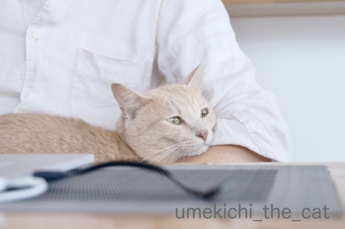
最近すっかりお膝猫なんですよ。
おとーさんのお膝に乗ってうっとりしてますw
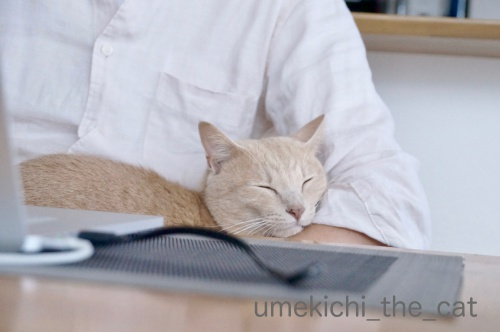
ぬくいですかー！！
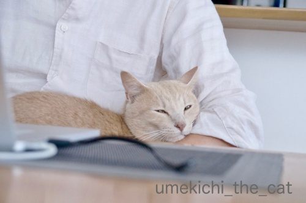
ちろり
夜も足の間or脇の下に挟まって密着して寝るようになってきました。
身動きが取れない。
最近寝違えたのはそのせいかしら・・・・・
にゃんこのまつ毛問題（笑）梅吉の横顔を撮ってみました。

（おっと撮影）

（おかーさん撮影）
判りにくいかな？
思い切りトリミングします。

（おっと撮影）
被毛が下がっているようにも見えますがまつ毛ですよね！？
改めて見るとそんなに長くは無いけど（あおくんと比べると特にw）密に生えてる感じ？
長いのも密なのも羨ましいです・・・
最近私のカメラがやけにハイキーに写るなぁと思っていたら
撮影モードがエフェクト入りになっていた様子w
なおしてもらいました(^_^;)
↑ガブッと一押し↑
夕方５時を回る頃には窓に叩きつけるように強く降り出しました。
夜の８時半、和歌山県田辺市付近に台風24号が上陸したとニュースが流れた頃から
我が家付近も更に風雨が強まりました。が、21号ような恐怖は感じませんでした。
ただいま夜の10時を少し過ぎています。
雨風は強いですがピークは過ぎた感じ。今夜は早めに休もうと思っています。
以下の記事は予約投稿になります＾＾
〜追記〜
昨夜は真夜中過ぎまで風が強かったです。
今朝も台風の名残の風が吹いているようですが雨はすっかり上がりました。
我が家はベランダのゴミ箱が倒れたくらいで被害はありませんでした。
今回は関東で倒木などの被害が出ているようですね。
皆様のところは大丈夫でしょうか。
･゜ﾟ･*:.｡..｡.:*･゜ﾟ･*:.｡. .｡.:*･゜ﾟ･*･゜ﾟ･*:.｡..｡.:*･゜ﾟ･*:.｡..｡.:*･゜ﾟ･*
雨がちで思うように窓を開けられないこともあり家の中はムシッと暑い日も多いこの頃です。
人間は半袖で過ごしていますがどうやらにゃんこは体感温度が違う様でして・・・
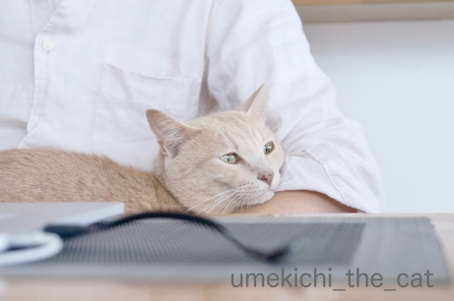
最近すっかりお膝猫なんですよ。
おとーさんのお膝に乗ってうっとりしてますw
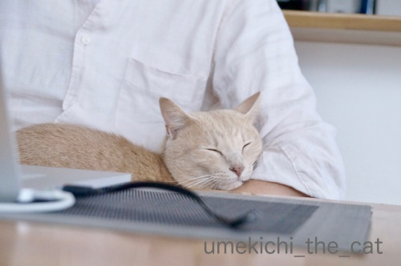
ぬくいですかー！！
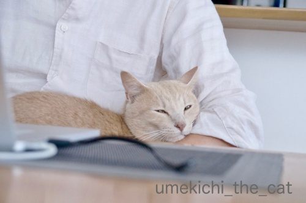
夜も足の間or脇の下に挟まって密着して寝るようになってきました。
身動きが取れない。
最近寝違えたのはそのせいかしら・・・・・
にゃんこのまつ毛問題（笑）梅吉の横顔を撮ってみました。
（おっと撮影）
（おかーさん撮影）
判りにくいかな？
思い切りトリミングします。
（おっと撮影）
被毛が下がっているようにも見えますがまつ毛ですよね！？
改めて見るとそんなに長くは無いけど（あおくんと比べると特にw）密に生えてる感じ？
長いのも密なのも羨ましいです・・・
最近私のカメラがやけにハイキーに写るなぁと思っていたら
撮影モードがエフェクト入りになっていた様子w
なおしてもらいました(^_^;)

カフェオレ色の梅吉

梅吉 2023年8月10日 永眠


梅吉と出会った譲渡会

犬猫の理由なき殺処分ゼロ
妄想広告
UMEKICHI 光

爆発的に早い！
時々攻撃的！
Thanks to Mr.Boss365
爆発的に早い！
時々攻撃的！
Thanks to Mr.Boss365